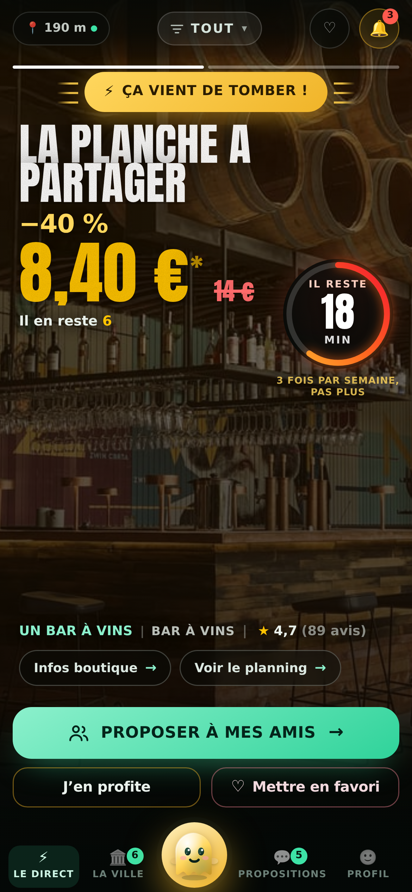
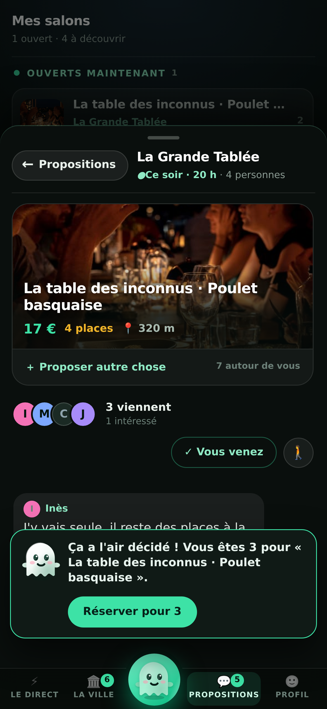

IL VOUS RESTE SIX PLANCHES. DITES-LE. ILS SERONT QUATRE DANS VINGT MINUTES.
La première application qui permet aux commerçants de remplir une
heure creuse en trois phrases dictées — et
à leurs clients de ne plus jamais choisir seuls.
Ni Google, ni Instagram, ni une plateforme de réservation ne sait que vous
avez six planches à écouler ce soir. Nous, si.

Trente minutes, pas plusLe compte à rebours descend à vue. À zéro, l’annonce disparaît —
c’est ce qui fait qu’on se décide maintenant.
C’est lui, en bas de l’écranIl passe à l’or quand une offre éclair vient de tomber à côté de
vous. Un appui, et la suivante arrive.
Ce qui change pour vous
UNE PLATEFORME VOUS DIT « TABLE DE 4 ». NOUS, ON VOUS DIT CE QU’ILS ONT CHOISI.
Ce que vous recevez sur votre téléphone
4 personnes · ce soir 20 h Ils ont choisi : poulet basquaise ×3, garbure ×1
Vous savez quoi sortir du frigo avant qu’ils entrent. Aucune plateforme
de réservation ne vous donne cette ligne-là : elle ne connaît pas votre carte.

1
Ils en parlent dans l’applicationPas dans un groupe WhatsApp où la décision meurt de fatigue. La
conversation est attachée à VOTRE annonce, et elle meurt avec elle le soir.
2
Le fantôme les aide à trancherIl compte les voix à voix haute — « 2 pour les lasagnes, 1 pour
autre chose » — et propose un seul geste : voter, ou réserver pour tout
le groupe. Jamais un menu, jamais un chatbot.
3
Une seule demande vous arrivePas quatre pour la même table. Dès que quelqu’un s’en charge, le
bouton dit qui — et les autres le voient.
La bulle verte, en bas de l’écran« Ça a l’air décidé ! Vous êtes 3 » — et un seul bouton :
réserver pour tout le groupe.
VOUS VOULEZ L’ESSAYER ?
Je passe vous montrer l’application sur votre comptoir, en cinq minutes,
sans rien vous demander. Vous verrez votre commerce dedans avant de décider
quoi que ce soit.